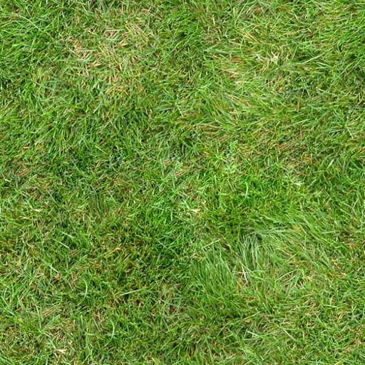
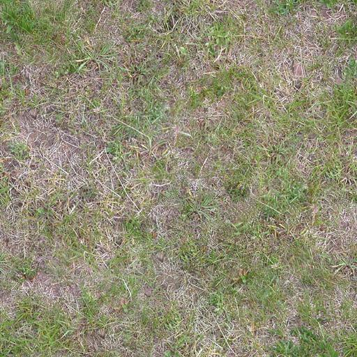
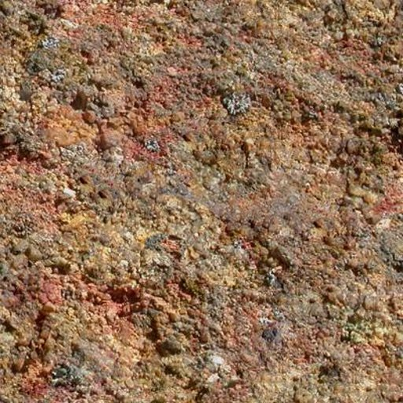
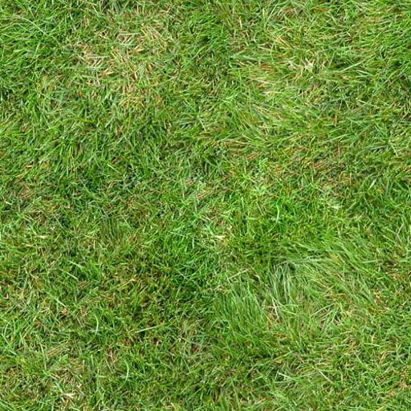
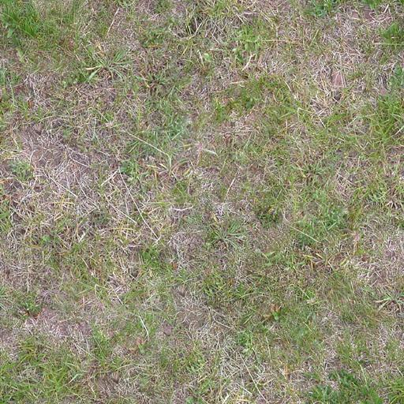
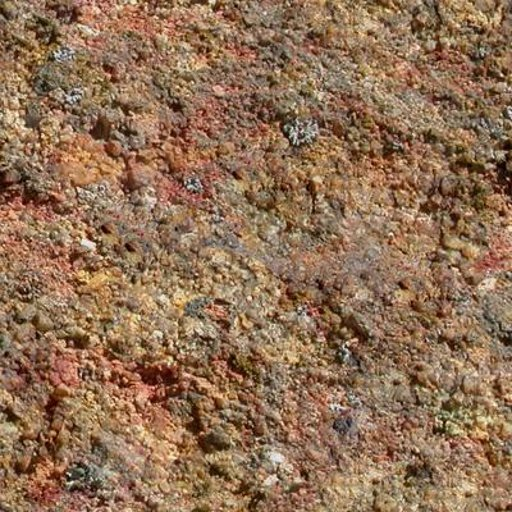

Drop existing file on
landscape to load.
landscape to load.
Choose tool or texture and DRAG mouse to apply
W,A,S,D to move, R,F to rise or fall, SHIFT to move quickly.
MOUSE WHEEL or Q,E to change brush size
SHIFT + DRAG to orbit view.
W,A,S,D to move, R,F to rise or fall, SHIFT to move quickly.
MOUSE WHEEL or Q,E to change brush size
SHIFT + DRAG to orbit view.
Height Brush Strength: